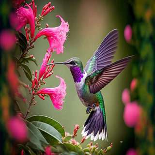
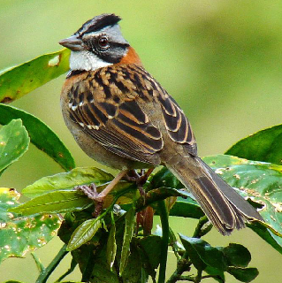
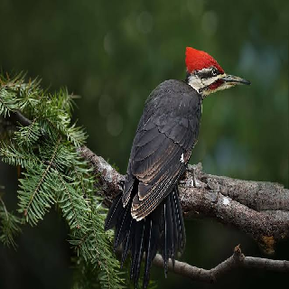
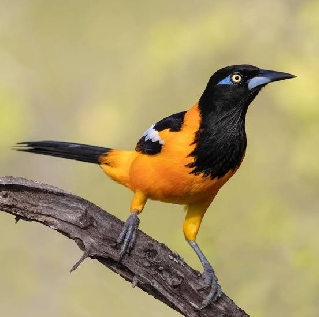
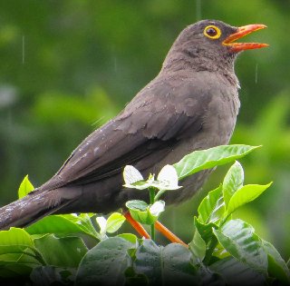
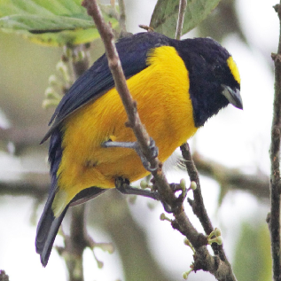

- Colibri
- Tamaño: Muy pequeñas
- Colores: Brillantes
- Habilidad: Capacidad de volar en todas direcciones
- Alimentación: Néctar
- Raza: Trochilidae (familia de los colibríes)

- Copeton
- Tamaño: Pequeñas
- Colores: Gris y marrón con un copete distintivo
- Habilidad: Adaptación a áreas urbanas
- Alimentación: Semillas e insectos
- Raza: Passeridae (familia de los gorriones)

- Carpintero
- Tamaño: Mediano
- Colores: Generalmente negro, blanco y rojo
- Habilidad: Perforar la corteza de los árboles con su pico
- Alimentación: Insectos encontrados bajo la corteza
- Raza: Picidae

- Turpial
- Nombre Común: Turpial
- Tamaño: Mediano
- Plumaje: Generalmente amarillo y negro
- Habilidad: Canto melodioso
- Alimentación: Frutos, insectos y pequeños animales
- Raza: Icteridae

- Mirla Patinaranja
- Tamaño: Mediano
- Plumaje: Oscuro con flancos anaranjados o rufos
- Habilidad: Canto melodioso
- Alimentación: Frutos e insectos
- Raza: Turdidae

- Eufonia
- Tamaño: Pequeños
- Colores: Plumaje colorido
- Habilidad: Canto melodioso
- Alimentación: Semillas, frutos e insectos
- Raza: Fringillidae